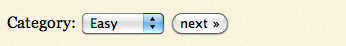

New
New Play QuickTime version
Play QuickTime version  Play Flash version
Play Flash version
Watch
Watch Populate Select Boxes screencast (Alternative flash version)
QuickTime version is approximately 60Mb, flash version is streaming.
View the demo used in the screencast
Preparation
There’s a fairly common case to have one select box driving the content of another. Or in fact, something driving the contents of a select box. Perhaps you’ve got categories like “easy”, “medium” and “hard”, like the categories used on this site. When someone selects “easy”, a select box populates with all the jQuery for Designers articles that are marked as easy.
Sometimes that second select box has it’s contents hidden in the page already, and sometimes you’ll want it to be called dynamically.
Think of it like this: if JavaScript is disabled, how do you want the visitor to use your page?
Let’s say for arguments sake, if JavaScript is disabled, the user sees a select box with the categories with a next button:

When the visitor hits next, it reloads to show them the article list to read:
Remember this is a contrived example for this tutorial. In practise, for SEO, I wouldn’t use a form to expose a list of my articles, equally there’s no way of going back to the state with the “next” button, etc. So please, if you’re starting out, don’t use this as a way to native your site.
What I really want to show you is how to progressively enhance this page using jQuery to dynamically populate these lists. However, what the screencast will also show you is how easy it is to include this kind of functionality for a prototype demo.
Tasks
Since we’re progressively enhancing the page, I want to remove the form’s default functionality, and replace it with my own. So the tasks are:
- When the category is changed make an Ajax request
- Take that Ajax response and insert it in to the articles select box
- If the articles select box doesn’t exist, we need to create it for the first time
- Update the form buttons, so that “next” doesn’t submit, and a “read” button appears when the article select is populated
Ajax Responders
Keeping it simple (and very much contrived), I’ve created three files that contain the articles that we want to display in the select box. Each called “select-boxes-easy.html“, “select-boxes-medium.html” and “select-boxes-hard.html” – as you can see the category name is in the filename. Here’s what easy looks like:
<option value="http://jqueryfordesigners.com/jquery-infinite-carousel/">jQuery Infinite Carousel</option>
<option value="http://jqueryfordesigners.com/bbc-radio-1-zoom-tabs/">BBC Radio 1 Zoom Tabs</option>
<option value="http://jqueryfordesigners.com/coda-slider-effect/">Coda Slider Effect</option>
<option value="http://jqueryfordesigners.com/image-cross-fade-transition/">Image Cross Fade Transition</option>
Essentially it’s the contents of the select element. Simple, eh?
Starting HTML
Our form starts with an initial select box and a “next” button:
<form action="select-boxes.html">
<label for="category">Category:</label>
<select name="category" id="category">
<option value="easy">Easy</option>
<option selected value="medium">Medium</option>
<option value="hard">Hard</option>
</select>
<input type="submit" id="next" value="next »" />
</form>
Progressively enhancing with jQuery
Note that the screencast doesn’t run in the same order. In fact, it will show you how to populate quickly first. For the written tutorial, I want to take you through each step to getting this effect working.
In this example, I put jQuery right before the </body> tag and directly below jQuery, I start my new <script> tag where our code will sit:
<script src="http://code.jquery.com/jquery-1.5.min.js"></script>
<script>
$(document).ready(function () {
// our code lives here
});
</script>
</body>
</html>
1 & 2. Making the Ajax request
Inside of the $(document).ready we want to say: “when the select box changes, make an Ajax request to load the article select box”:
$('#category').change(function () {
var categoryName = $('#category').val();
// for now, let's assume that <select id="articles"> exists
// so our Ajax url could look like: select-boxes-medium.html
$('#articles').load('select-boxes-' + categoryName + '.html');
});
Here I’m using the load method to take the contents of the file I’m requesting, and squirting it straight in to the $('#article') element – which, right now, doesn’t exist. So let’s create that now.
3. Create the article select box
We’ll create an empty variable: $article, and when the category is changed for the first time, we check to see if $article is null, and if it is, we create the article select box and assign it to $article (therefore preventing it from being created again):
var $article = null;
$('#category').change(function () {
var categoryName = $('#category').val();
if ($article == null) {
$article = $('<select id="article" name="article"></select>').appendTo('form');
}
// note that now we're point to the $article variable
$article.load('select-boxes-' + categoryName + '.html');
});
Now the form is working and creating the second select box properly, all we have to do is tidy up some of the buttons, since currently the “next” button submits the form.
4. Buttons
There’s three things we need to do:
- Change the “next” submit button to a “button” button
- If “next” is clicked, pretend like the category was changed (note: this part was accidentally omitted from the screencast)
- Add a “read” button (which if we were progressively enhancing a real page, this would appear when the category was submitted the first time)
The code needs the following added to the end:
var $next = $('#next');
$next[0].setAttribute('type', 'submit'); // note: this is required due to a bug in jQuery
// note that this part is not in the screencast
$next.click(function () {
$('#category').change();
});
Now inside of the Ajax request, we change the part that creates the article select for the first time and add:
if ($article == null) {
$article = $('<select id="article" name="article"></select>').appendTo('form');
$next.remove();
$('form').append('<input type="submit" value="read »" />');
}
And that’s that.
You can check out the final product and the final working version – but please, please remember this is a contrived example, only designed to show you how easy it is to populate on select box with another.
You should follow me on Twitter here I tweet about jQuery amongst the usual tweet-splurges!